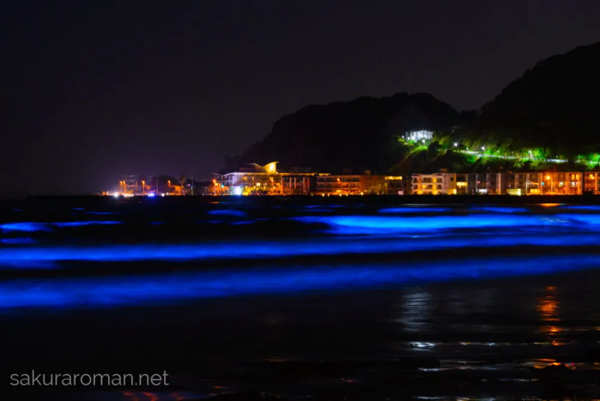
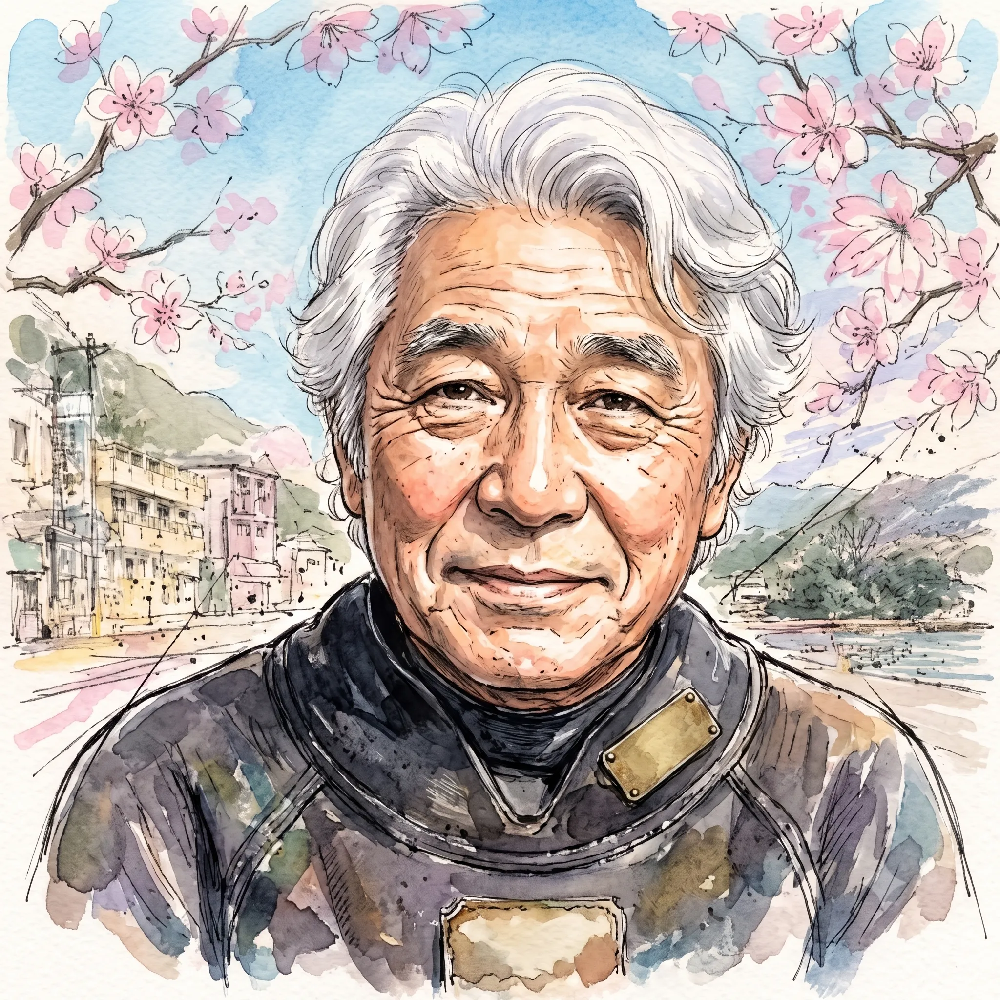
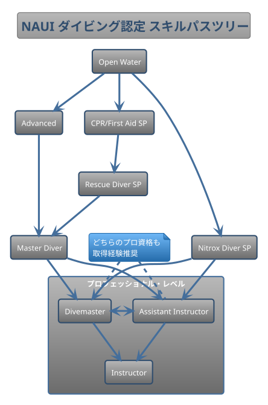

The road Orz passed by 2026 年 08 月
08 月 12 日 ( 水 )
Dive #195 知恵袋でインストラクターになりたいという高校 2 年生の若者に答えて
1052425768
2026/8/12 0:10高校を卒業したらダイビングインストラクターになりたいと思っている高校二年生です！
自分の今考えている進路は
高校在学中に潜水士の免許取得
↓
働きながらダイビングインストラクターの資格を取れる職場につく
↓
その後ある程度の実績を積んで独立
みたいなことを考えているのですが、
実際にこの将来設計は皆さんから見てどうでしょうか？
また、働きながらダイビングインストラクターの資格を取れる枠に応募したとして倍率などはどのぐらいなのでしょうか？
ダイビングインストラクターやそのほかの方、誰でもいいので意見が欲しいです。
1153204536
2026/8/12 0:14
潜水士とインストラクターの内容って重複してる部分多い気がする
それだったら船舶免許を優先したほうがいいかも
沖縄に移住できる仕事探して休みの日にダイビングしてくほうが堅実
1052425768
質問者2026/8/12 0:16
船舶免許もやはり必要なのでしょうか？
1153204536
2026/8/12 0:25
ダイビングしたことも無いですけど
普通海の沖合まで行くかと思います
免許あれば船長不在でもその日は仕事できるじゃないですか
救命処置の講習や資格なんかも必要ですね
平時じゃなくて非常時を見据えたほうがいいですね
1052425768
質問者2026/8/12 0:26
なるほど！
ありがとうございます！
<<感想: いや、なるほどじゃないし。わかってない人間が適当に回答してるだけだし。>>
1052609818
2026/8/12 0:42
潜水士の免許は必須ですよね。
あとは船舶免許（海技士）も持って居た方が圧倒的に有利ですね。
で、この先なんですけど…。
現在、「海に出かける」という人が95%くらい減っているという現状があります。
日本中の海水浴場が、壊滅状態です。誰１人お客が来ないんです。
もう、「海に行く」というレジャーが、日本では「無くなってしまった」のです。
「日焼け」の影響で、「女性が絶対に来ない」のです。
「男だけ」でダイビングして楽しいですか？
もう、女性は山には行きますが、海には行かないのです。
ハワイなども、女性も家族連れも行かなくなったので、日本からのツアーは、ほとんど無くなってしまったんです。
海のレジャー産業は、この先、どうしようも無いのだと思います。
1052425768
質問者2026/8/12 0:43
今そんなことになっているなんて初めて知りました！
教えていただきありがとうございます！
もしかしたら海系の仕事がなるなるかもしれないのですか？
1052609818
2026/8/12 0:53
ユーチューブで時事系の動画をたくさん見ているのですけど、かなりのチューバーが、それに触れていたんです。
（どこの海水浴場も壊滅だーって悲鳴の動画です）
日本で唯一、神奈川県の由比ガ浜（湘南ですね）だけが、栄えているらしいって動画です、
由比ガ浜海岸は、「日没後にオープン」して、海岸で出店を楽しむって形に変更したらしいのです。
そしたら「連日、満員御礼の大盛況らしいです。
出店の数も、数百件規模になり、毎日、毎日、お祭り状態らしいです。
海への憧れ、浪漫は、女性でも男性でも持っているんですが、やっぱり日焼けなんですよねー。
画像は、まだ入場前の由比ガ浜海岸です（こんな感じ）

1052425768
質問者2026/8/12 0:43
なるほど！
確かに自分的にも調べてみたのですが、少しづつダイビングをする人も減少しているらしいです。
ですが、とりあえずやってみたいことなので頑張ってみることにします！
ありがとうございます！
<<感想: 高校 2 年生の子、しっかりしてるな。ネットオタクの言説でブレない。しかもある程度、自分できちんと調べてる。>>
シャモミさん
2026/8/12 4:47
ダイビングを経験済みで、働きたいと思うお店のイメージがあって、年収が低くてもよいと考えているならまあ、無しではないですが相当リスクが高いです。
潜水士は就職してから取らせてくれるので、在学中に取る必要は薄いと思います。船舶免許も同様です。それよりはダイビングのライセンスのDMまで取ると良いです。
時短になります。
またお金があると良いので資格を取る時間があるならバイトでお金を貯めましょう。
100万は最低ラインで欲しいです。出来れば300万ぐらいあると良いです。あれば有るほど色んな選択肢が取れるのでよいです。
卒業までに溜まりそうにないなら、いきなりは諦めて、まずは稼ぐために適当な会社に就職することをおすすめします。
そこで貯金しながらDMまで取ってからの方がリスクが少ないです。
ついでに自動車の運転免許も取りましょう。
船舶免許よりこちらの方が必要度は高いです。
最初に書かれた計画で貯金が0円でも成せばなるのですが相当大変だと思います。
どんなに辛くても辞めないという不退転の決意は最低限必要になります。契約にもよりますが、途中で諦めると数百万円の借金を抱えることになりかねません。
<<理由はわからないけどレスなし。>>
さすらいのDMさん
2026/8/12 9:56
まずは高校を卒業するまでは、真面目に学校を楽しむことをおすすめ致します(≧▽≦)
ダイビングインストラクターって、インストラクター業務の他に、通常はガイド業務で生計を立てることになりますから、お客様を楽しませるための対人スキルや人生経験が大事になってきます。
・・・できれば、大学くらいまで行って、勉強と遊び、可能なら海関係に限らず、色んな経験を積んでおくことをおすすめ致しますが、まあそこは人それぞれ〜(≧▽≦)
潜水士資格に関しては、できればダイビングCカード講習のあとに取得した方が良いかも〜
普通はダイブマスターあたりで同時に取る人が多いと思います〜(• ▽ •;)
『命かけて、意地でもダイビング業界で生きていくんだ〜』なんて強い意志をお持ちで無いなら、まずは普通な就職を目指しましょう〜(• ▽ •;)
よほどのブラック企業でなければ、ダイビングが出来ない企業は少ないです〜。
・・・で、まずはスクーバーダイビングのエントリーレベルのCカード講習を受けて、ダイビング界隈に参加、とりあえずどのみちプロコースにはいるには『最低30本(回)、1日2本で15日』くらいはダイビングをしなきゃなりませんから、ダイビングを思いっきり楽しみましょう〜(≧▽≦)
その経験は、ダイビングインストラクターになる際に絶対に無駄にはなりませんからね〜
で、ダイビングを30回くらい楽しんで、まだプロコースに進みたいな〜なんて思っていたら、まずはプロの前段階、レスキューダイバーコースを受講致しましょう〜(≧▽≦)
レスキューダイバーコースって銘打ってはいますが、実際は『自分自身をいかに守るか、いざ、突発的に、同行者がトラブルに巻き込まれた際に、最低限、どうするべきか・・・』を勉強するのがレスキューダイバーコースでやんす〜(• ▽ •;)
そこまでダイビングをやって、ダイビング業界にまだ参入したいのなら、色んなショップを回って、師匠と仰ぎたいダイビングインストラクターを見つけ、そこでダイブマスターコースを『真剣(マジ)コース』で受講致しましょう〜(≧▽≦)
ようやくプロコースに入って、ダイビング業界の裏表を勉強。それでもダイビングへの情熱が薄れてなければ、アシスタントインストラクターコースを経るか、インストラクターコースへ足を踏み入れ、可能なら、師匠のショップで臨時で働かせてもらいつつ、色んな海で経験を積んでいきましょう〜(≧▽≦)
そこまでして、将来の展望をダイビング業界で見いだせたなら、お世話になった会社に辞表を提出して、ダイビング業界へどっぷり嵌ってください。
多分、現在の状況では、それくらい、『石橋を叩いて渡る』をした方がよろしいかと思いまする(>0<；)
とりあえず、参考までに〜(｡･ω･｡)ﾉ♡
1052425768
質問者2026/8/12 13:373
ありがとうございます！
やはり、ワーキングスタディはブラックなのでしょうか？
さすらいのDMさん
2026/8/12 14:27
返信確認〜(｡･ω･｡)ﾉ♡
う〜ん(>0<；)
ショップによりけり、相性によりけり・・としか言えないッス(>0<；)
ぶっちゃけ、ダイビング業界って、いくら時代の波がホワイトっぽくなったとはいえ、身体張ってお客様をサービスする、ある意味極限のサービス業務です。
しかも昨今の不況やトレンドの変化にさらされて、昔以上に不安定な職業だと思います。
・・ですから、真面目にやってるショップさんでも経営はかなり難しく、また、お客様商売ですから、ワーキングスタディを受けにきたスタッフ候補に対する要求も厳しいかと思います。
ですから、真面目なショップでも、言葉は丁寧でも、厳しさはマシマシ・・・それを『ブラック』と感じるか、必要悪(グレーゾーン)と感じるかは、受け手側次第だと思います〜(>0<；)
また、真面目にやってないショップさんだと、今はどうかは知りませんが、過去に、講習もせずに、インストラクターがスタッフに『ダイブマスターを認定』して、お客様をガイドさせてた・・なんてのを実際にみたことがあります。
さすがにインストラクターを・・ってのは外国での話しか聞いた事がありませんが。(>0<；)
また、何度も書きますが、ダイビング業界だけで喰ってくには、技術、経験、知識の他に運も関係するかと〜(• ▽ •;)
ですから、自分は、とりあえず、安定した就職をしてから、ダイビングを始めて、両立させるのをおすすめ致します。
まあ、運に恵まれ、良き師に出逢い、海に選ばれれば、ものの2〜3年でインストラクターとしての展望は見えてくるかと思います。
・・・何より、いろいろな経験を積んだインストラクターさんは、やっぱり強いッスよ。
とりあえず参考までに〜(｡･ω･｡)ﾉ♡
1052425768
質問者2026/8/12 16:38
わかりました！
ありがとうございます！
さすらいのDMさん
2026/8/12 16:50
頑張れ〜(｡･ω･｡)ﾉ♡
<<いつものさすらいの DM の暴走……散々高校生を脅しておいて頑張れはないやろ。まぁ部分的に正しいことも伝えてるからいいか。許すか。いつもどおり馬鹿だけど ⬅ またムカついている>>
凡人潜人さん
カテゴリマスター
2026/8/12 11:37
＞実際にこの将来設計は皆さんから見てどうでしょうか？
昔から有って、大昔の丁稚奉公に近く、勤務先に拠っては奴隷扱いになります。
知り合いに居ますけど、衣食住も含めて全費用負担する代わりに２年間タダ働きという契約で、実際には彼が予想以上に働いたからか、小遣い程度は貰ってたようです。
まあ、漫画家や芸人の弟子みたいな感じですかね？
ただ、彼は資格を得た頃には十分な経験も積んでいて、カネ払ってコースを受けただけのペーパーイントラとは大違いの即戦力でした。
＞また、働きながらダイビングインストラクターの資格を取れる枠に応募したとして倍率などはどのぐらいなのでしょうか？
それは、たまたま１名募集の枠に２人が応募して来たら単純に２倍ってことになり、一般企業と同列に考えない方が良いです。
所詮、殆どは個人商店ですから。

1052425768
質問者2026/8/12 13:35
ありがとうございます！
<<正直者の西の横綱の凡人潜人さん (笑)>>
<<そして相手が受け止めきれない情報量を渡すもう１人の西の問題児のぼく>>
OrzDiver
カテゴリマスター
2026/8/12 12:29
NAUI の場合で説明します。直接の回答にはなりませんが、ライフプランを立てる前提になる背景情報は必要だろうと考えました。ふわっとした情報より、なるべくより具体的な情報に近いもののほうがよいかと思ってまとめました。
PADI については他の方が回答されると思います。
【NAUI でインストラクターになるまでのコース受講について】
NAUI では以下のパスでインストラクターを目指すことになります。NAUI の資格であっても他の団体の同等の資格であってもかまいません。

Open Water ➡ Advanced ➡ Master Diver ➡ Divemaster or Assistant Instructor ➡ Instractor
Divemaster or Assistant Instructor と or で繋げていますが、NAUI としては両方経験するように指導しているので実際には取得順序は別として Divemaster and Assistant Instructor になります。
ただ実際にはもともと NAUI は中身を重視するという伝統があるので、Diver Master か Assistant Instructor を取得して Instructor Traning Couse に望むことが多いと思います。
また実は基準 (PDF) 上は Advanced Open Water Scuba Diver は必須ではありません。必須ではありませんが受講せよと通常言われます。
これと並行して Diver Master または Assistant Instructor を受講し始めるまでにまでに以下を取得しておく必要があります。
- Rescue Diver SP:
Open Water 修了後から受講可能です。 - CPR/First Aid SP:
ダイバーとして認定されていなくても受講可能です。
2 年ごとに更新する必要があります。 - Nitrox Diver SP:
Open Water 修了後から受講可能です。
フローチャートを参考にしてください。
【NAUI ITC について】
基準上は以下の２つに別れます。ですがまとめて行われることもあります。詳細は受講するコースディレクターに確認してください。
- ITP:
Instructor Traning Program - IQC:
Instructor Qualification Course
【潜水士取得について】
潜水士は高圧環境下で働く人に必須の国家資格になります。
労働安全衛生法及び作業環境測定法の関連規則である高気圧作業安全衛生規則で、事業者は高圧環境で業務に携わる労働者を使用する場合、潜水士を使わなければならないと定めています。
これに反した場合、雇用者は法的に罰せられれることになります。
なのでダイビングインストラクターも雇用されて潜水業務に従事する場合は潜水士資格が必要になります。
【器材について】
NAUI では Advanced Scuba Diver の受講条件に
受講生は⾃⾝のダイビング器材を⽤意し、その管理とメンテナンスに責任を負うものとする。
とあります。
これに解釈を加えて受講生の経済状況を踏まえて器材の購入を勧めたり、あるいは器材の購入を慌てる必要はない、などと現実的なアドバイスしています。
ただしリーダーシップになるのに自前の器材を持ってないというのはあり得ず、それだけでなくプロフェッショナルが持つべき器材を自分の器材として持っていることが普通に求められます。これは実際にあなたの指導者に訊いてください。
【Note 1】
以上のインストラクターになるまでのコース受講コスト、器材コストなどを総計すると概算で 150 〜 300 万は見ておいたほうがよいかもしれません。幅があるのは器材によっても変わるし、何より人によって必要な期間が変わるからになります。
インストラクターは決まった時間でなれるものではないからです。
【船舶免許について】
現地サービスなどに務めて操船も担当する、あるいは将来現地サービスを開業して自身でボートを所有し運行する場合は船舶免許は必須となります。
陸から５海里までしか運行しない場合は、二級小型船舶操縦士免許で十分と言え、沿岸で運行することが多いダイビングボートでは多くの場合、この二級小型船舶操縦士免許で間に合うかと思います。
船舶を運行する場合、必須ではありませんが無線免許を持っていたほうがいざというときのために良いかと思われます。知床の KAZU I の事故以来指導が厳しくなり、船の乗船定員によっては実質的に必須となります。
船を持たずに他店の乗り合いとする場合は船舶免許は不要となります。
【働きながらダイビングインストラクターになるということ】
ワーキングスタディと呼んだり、通常の企業の世界のように OJT と呼ばれたりもしますが、ダイビング業界特有の習慣で「丁稚奉公」と呼ばれることもあります。
スタッフの一人として働くことが前面に押し出されることになるので、働くことでインストラクターになるまでの必要なことを学ぶことになります。
現時点で労働条件としては正直なところあまりいいとは言えないところが多いかとは思います。低収入で修行であることが前提になる場合が多い印象です。
メリットもあります。しかも無視できないメリットが。
仕事としてダイブマスター、アシスタントインストラクター、そしてインストラクターに取り組むことを学ぶことができます。ITC を受ける時点である程度インストラクターとして完成されている状態なので、ITC に通りやすい、そして仕事として取り組んでいることから ITC を終えた時点で (合格ではなく終えたって表現になってしまいます。ITC より仕事のほうがキツいし厳しいので)、即戦力として働くことができます。
また最初から開業を目指したい旨相談しておけば、ショップオーナーを目指す人間としてのアドバイスも受けることができることがあります。開業資金はどうするのか、運転資金は？経理は？広報、広告は？ボートや車両の維持は？そして肝心の年間の収入推移まで。
師匠になる人によってはそこまで相談にのってくれる場合もあります。インストラクターになろうとする人間ではなく、同業を目指す人間だとみなして、そのようないろんな相談に乗ってくれる場合もあり、普通じゃない学びを得ることができる場合があります。
ですが独立するまでは収入、体力ともキツいとは申し上げておきます。
とはいっても開業してからも収入、体力はキツいのですが。
なおそれを改善して若い人が業界を目指したくなるようにしたいと頑張っておられる PADI コースディレクターの方も浜松にいらっしゃいます。
最低限ですが知っておいたほうがいいことは以上でしょうか。
以上書いてきたことはあくまで他の方の回答を補助する内容です。他の方の回答と合わせて参照してください。
またわかるようにとても長いので、時間があるときにゆっくり見てください。
1052425768
質問者2026/8/12 13:345
詳しく丁寧にありがとうございます！
よく読んで理解してみたいと思います！
- Category :
- #Records of Orz's Road
- #ダイビング
- #スクーバダイビング
- #インストラクター
- #開業
- #キャリアパス